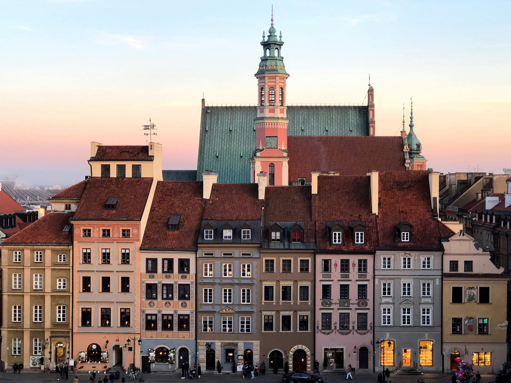

Welcome to How to Study Polish!
Dive into the rich and vibrant world of the Polish language and culture. Whether you're a beginner or looking to enhance your skills, our comprehensive resources and interactive tools make learning Polish enjoyable and effective. Join our community and start your journey today!
Discover the Polish Language
Polish, the official language of Poland, is spoken by over 50 million people worldwide. Known for its distinctive sounds and complex grammar, Polish offers a rewarding challenge for language enthusiasts. Whether you’re learning for travel, work, heritage, or personal enrichment, we’re here to make your learning experience effective and enjoyable.
What You’ll Find Here
Our website is designed to be your comprehensive guide to learning Polish. Here’s what we offer:
Structured Lessons:
- Vocabulary: Build your word bank with themed vocabulary lists.
- Grammar: Understand the rules and structures that form the foundation of Polish.
- Audio Recordings: Listen to a native speaker and practice your pronunciation.
Interactive Tools:
- Practice Apps: Engage with apps designed to help you master declension and conjugation.
- Quizzes and Exercises: Test your knowledge and track your progress with interactive quizzes.
- Flashcards: Reinforce your memory with customizable flashcards.
Cultural Insights:
- Explore articles about Polish traditions, holidays, and daily life to deepen your cultural understanding.
Community Support:
- Join our forums and connect with fellow learners. Share tips, ask questions, and find language exchange partners.
Why Learn Polish?
Learning Polish opens doors to new opportunities and experiences. Whether you’re planning a trip to Poland, connecting with Polish-speaking relatives, or enhancing your career prospects, knowing Polish will enrich your life in countless ways.